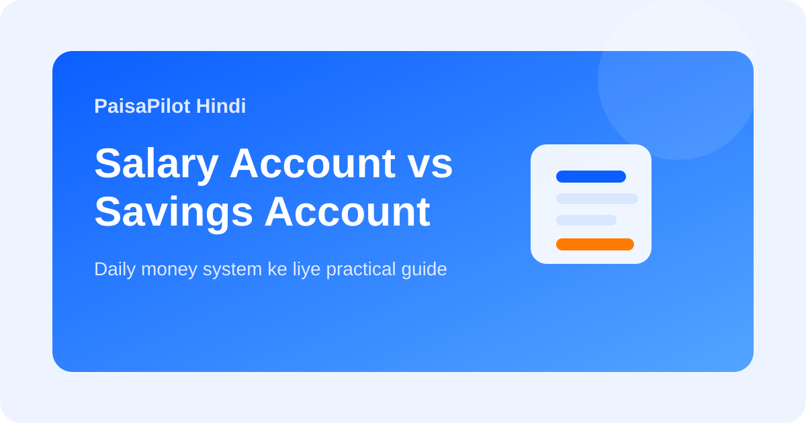

Salary Account vs Savings Account: Daily Money ke liye kya better hai?
Last updated: March 19, 2026

Bahut se salaried log salary receive karne wala account hi sab kuch ke liye use karte rehte hain. Lekin salary account aur savings account ka use case alag ho sakta hai. Agar difference samajh aa jaye, to salary flow, monthly spending aur savings ko zyada clearly manage kiya ja sakta hai.
Quick Answer
Salary account salary receive karne ke liye useful hota hai. Savings account personal long-term money management ke liye zyada stable hota hai. Best system kai logon ke liye dono ko alag role dena hota hai.
Salary Account kya hota hai?
Salary account usually employer-bank tie-up ke through khulta hai. Isme zero-balance ya kuch benefits mil sakte hain, lekin ye features salary credit par depend bhi kar sakte hain.
Savings Account kya hota hai?
Savings account aapka personal account hota hai. Ye employer se linked nahi hota. Job change, break, ya salary shift hone par bhi iski basic utility stable rehti hai.
Practical Difference
| Point | Salary Account | Savings Account |
|---|---|---|
| Main use | Salary receive karna | Personal banking aur savings |
| Employer link | Haan, often | Nahi |
| Best role | Income inflow | Budgeting aur long-term use |
Best Working System
- Salary salary account me receive karo.
- Fixed amounts savings account me transfer karo for bills, investing, emergency money.
- Ek main spending account rakho taaki statement review easy ho.
- Job change ke baad account rules check karo.
Common Mistakes
- Saara paisa salary account me chhod dena.
- Employer change ke baad account terms check na karna.
- Ek hi account me salary, spending, savings aur emergency fund mix kar dena.
Related Guides
Bank Statement Review, Salary Slip Explained, Zero-Based Budget
Editorial Note: Educational information only; final decision se pehle bank terms check karein.